SSPI (Super Simple Package Installer) is a homebrew app for the PS4. It searches the package sources you add, downloads through Real-Debrid, TorBox, AllDebrid or Premiumize, and installs the result on the console.
This guide covers setup, every setting and how sources work. The current release is the 5.11.2 beta. SSPI is free; service plans are separate.
About five minutes: settings, connecting your phone, linking Real-Debrid, adding a source and downloading a game. When the phone is in use, it's shown next to the PS4. Use the list to jump to a step.
Recorded on a 5.11 beta test build (ee19b0a58628), so a few screens differ from 5.11.2. Features that aren't in 5.11.2 yet are marked Next beta in this guide. Account details, pairing codes, file names and host names are blurred.
What you need
A PS4 that runs homebrew
GoldHEN is needed for background downloads. Support across firmware versions is still being tested.
Required
A phone on the same network
Used to enter service keys and add sources. Any browser works, and there's nothing to install.
For setup
A download service account
Real-Debrid, TorBox, AllDebrid or Premiumize, with your own plan. Direct links and USB files work without one.
Optional
Free storage
Leave room for the download, any archive extraction and the installed game. A large RAR set can briefly need about twice the game's size.
Required
How SSPI works
SSPI doesn't come with a catalog. It searches the sources you add, gets download links through your service account and installs on the PS4.
SourcesA package source tells SSPI where to look up games, updates and DLC.
SearchSSPI asks every enabled source and combines the results for each title.
Your serviceReal-Debrid or another service turns a host link into a direct download.
PS4SSPI downloads, extracts and verifies the package, then hands it to the PS4 installer.
Do these in order. Each step links to its part of the video.
Install SSPI
Download sspi5.11.2.pkg from the 5.11.2 beta release and install it like any other homebrew package. GitHub's source ZIP isn't an installable package.
If you already have SSPI, install over it; your settings stay in place. Then open SSPI once, fully restart the PS4, enable GoldHEN again and reopen SSPI. That loads the updated background worker. The footer should read BETA 5.11 / 7ef9395e7b2f.
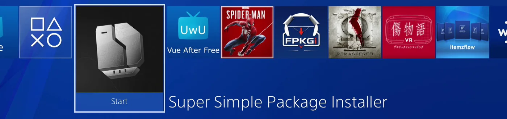
Open Settings
Press OPTIONS anywhere in SSPI. Use L1 and R1 to move between General, Connections, Appearance, Sound and Storage. On General, choose Save and close when you're done. Appearance and Sound save automatically.
Open Settings → Connections and scan the QR code with your phone's camera, then open the link. When the phone page loads, the PS4 shows Phone connected.
Both devices must be on the same network. A wired PS4 and a phone on Wi-Fi work if they can reach each other; a guest network or a phone VPN can block the page.
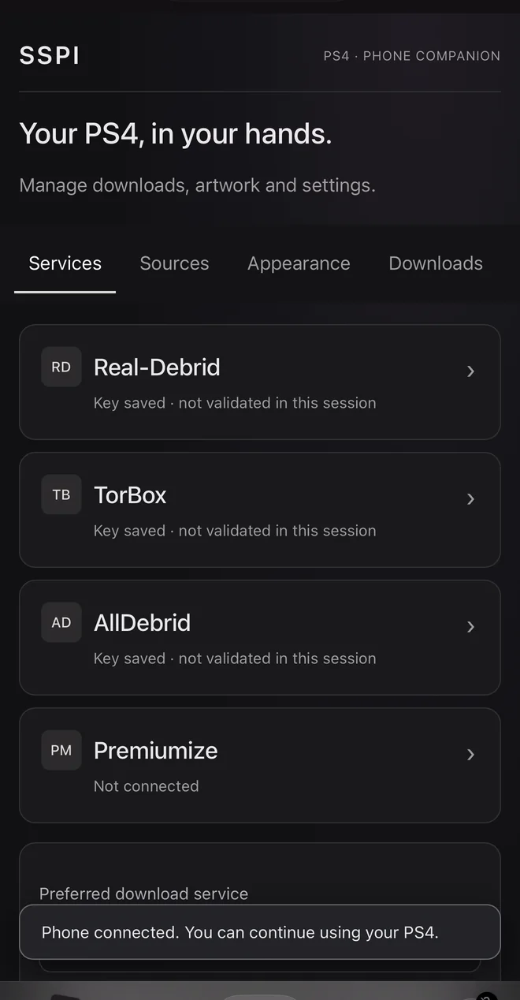
Keep the QR code private. It contains a pairing link to your console. Don't post it in screenshots or issue reports.
Link Real-Debrid
On the phone page, open Services and tap Real-Debrid.
Tap Get your API key and sign in to Real-Debrid. The API token page opens.
Copy your API private token. Treat it like a password.
Back on the phone page, paste it into API key and tick Enable for downloads.
Set Preferred download service to Real-Debrid and tap Save and validate.
The phone and the PS4 both show Key validated · account ready.
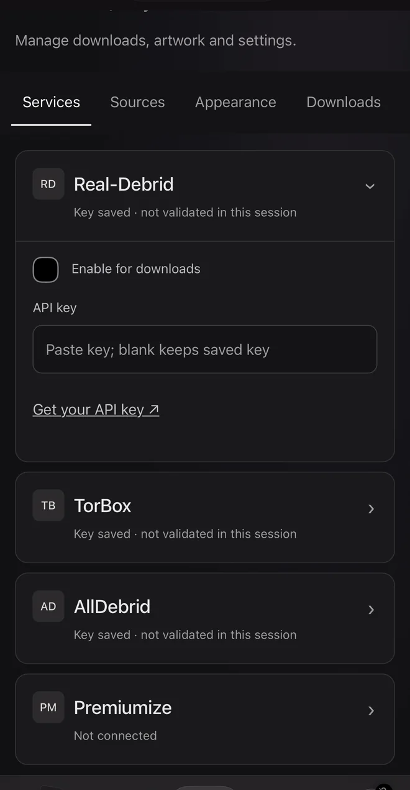
Open Real-Debrid
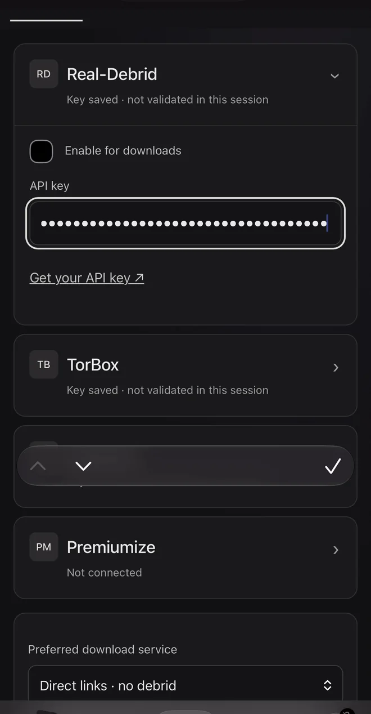
Paste the token
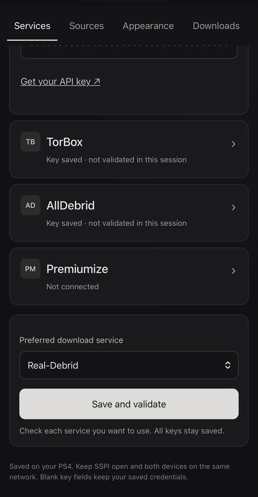
Save and validate
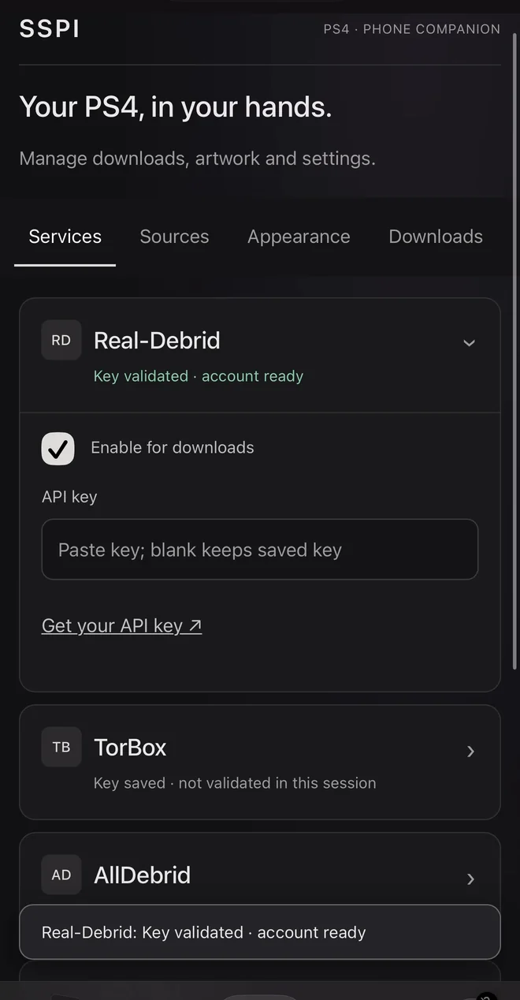
Validated
TorBox, AllDebrid and Premiumize work the same way. Keys are saved on the PS4, and leaving a key field blank keeps the key that's already saved.
Add a package source
Sources tell SSPI where to search. Open Settings → Connections → Manage sources and choose one of three ways:
Browse community sources: pick a shared source and choose Install.
Add a source link: send a .gssource URL from the phone page's Sources tab.
Install from USB: choose a .gssource file on a connected drive.
SSPI checks the file before installing it. Installed sources appear in the same list, where X turns one on or off and Square removes it.
On Search, press X on the search field and type a name or a CUSA ID. Open a title to see its packages, grouped as base game, updates, DLC and backports.
L2 switches region, Triangle shows the mirrors for a package and X queues it. Square queues the recommended set: the base game plus the best update for your firmware. SSPI only lists hosts that your enabled services support.
Host names are blurred in this guide.
Follow the download
Press R1 to open Downloads. Each card shows the size, speed, time left and the current stage. Press R2 on a game to open its drawer, with Packages, Files and Errors.
A full progress bar doesn't mean the game is installed. Wait for SSPI to report the installation, then check that the game is on the home screen.
Everything you download goes into one queue, whether it came from a search, a link, your service account or a USB drive.
The queue
All, Active and Attention
Filter the queue. Active shows jobs that are downloading, preparing or installing. Attention shows failed, paused and cancelled jobs.
Order and dependencies
Queued games wait their turn. Updates and DLC wait for their base game, whatever order you added them in. To let another job go first, pause the active one.
The drawer
Press R2 on a game. Left and Right switch between Packages, Files and Errors; L2 closes it. Keep the exact wording from Errors if you report a problem.
Pause, remove and retry
X runs the action shown for the selected package, such as Pause or Retry. Square removes a package or game after a confirmation.
Add your own files
Press the touchpad on Downloads to add files that didn't come from a search.
Paste a download link
A direct PKG or archive link, a debrid share link, or a link from a host your service supports.
Browse stored debrid files
Ready files and completed torrents that are already in your own account. SSPI imports the file; the torrent doesn't run on the PS4.
Pick a service
Choose Real-Debrid files or torrents, AllDebrid torrents, or TorBox files or torrents, then select the files to queue.
Install from USB
Browse a connected drive and select packages or archives. Keep SSPI open while files wait to start, and keep the drive connected until installation finishes.
Send links from your phone
On the phone page, open Downloads, paste up to 50 links (one per line) and tap Queue on PS4. Direct packages, archives and supported host links use your PS4's selected service and staging drive.
If the links are the parts of one RAR archive, tick These links are parts of one RAR archive, in volume order. Parts with recognizable names are grouped automatically; tick the box for links that hide their file names.
Using the console instead? Choose Send download links on the PS4 for a QR code that opens the same page.
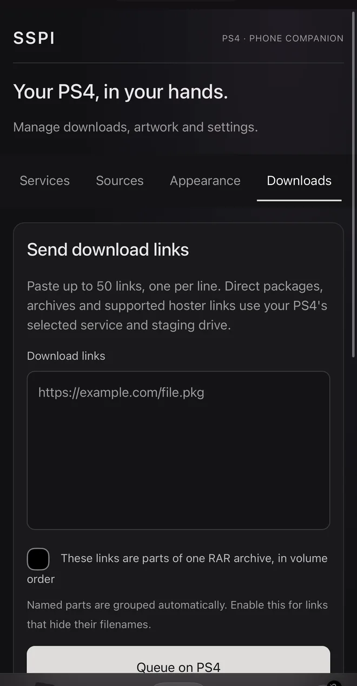
Archives and storage
RAR and multipart sets
Queue the complete set. SSPI extracts it on the PS4 and checks the extracted package before installing it. Missing or damaged parts need a complete set or another mirror.
Plan for peak space
During extraction, the archive and the extracted package exist at the same time. Keep enough free space for both.
Staging drive
Downloads and extraction stay on the staging drive until installation succeeds. Confirmed installs remove their staging files; failed jobs keep theirs so you can retry. Set it under Settings → Storage.
Settings
Press OPTIONS in SSPI to open Settings, and L1 or R1 to move between its five pages. Each option is listed below with what it does.
General
Downloads and compatibility. Choose Save and close to keep changes on this page.
Download mode
In-app runs downloads inside SSPI, so keep the app open. Background hands jobs to the resident worker so they continue after you leave SSPI. Background needs GoldHEN and a ready worker.
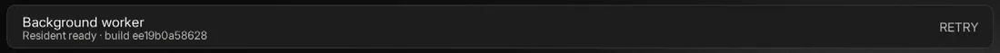
Background worker
Shows whether the resident worker is ready, and its build. If it isn't ready, choose Retry. After an update, restart the PS4 and enable GoldHEN again to load the new worker.
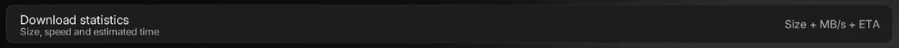
Download statistics
Chooses the numbers on each download card, such as size, speed in MB/s and time left.
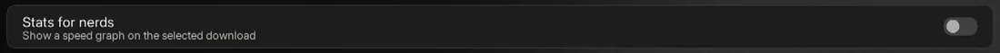
Stats for nerds
Adds a live speed graph to the selected download.
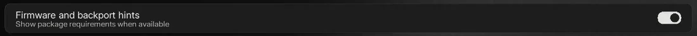
Firmware and backport hints
Shows a package's firmware requirement and backport details when the source provides them.
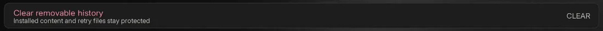
Clear removable history
Removes finished entries from the history. Installed content and files kept for retries stay protected.
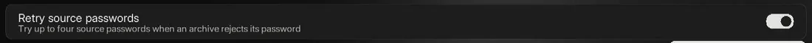
Retry source passwords
If an archive rejects its password, SSPI tries up to four passwords supplied by the source.
Connections
Download services, the phone QR code and package sources. All keys stay saved when you switch services.
Real-Debrid, TorBox and AllDebrid
Tick a service to use it for downloads. The line underneath shows whether its key is saved and whether it was validated in this session. Add keys from the phone page.
Premiumize
Set up links Premiumize from your phone.
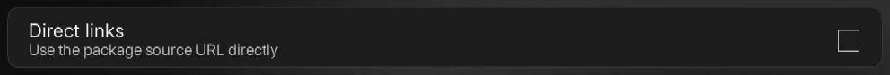
Direct links
Uses the source's own URL without a service. Host speed limits and availability apply.
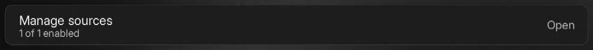
Manage sources
Opens Package sources, where you can add, turn on or off, and remove sources. See Sources.
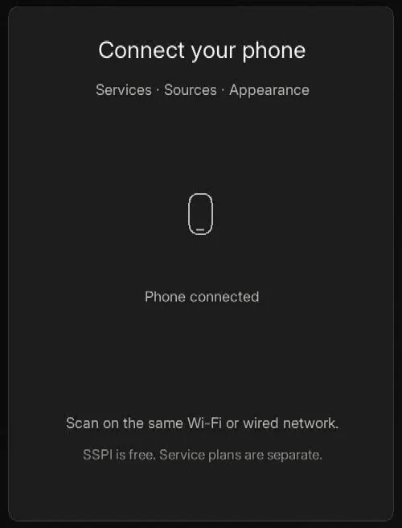
Connect your phone
Shows the QR code for the phone page, then Phone connected once a phone opens it. Square opens the QR setup.
Appearance
Changes save automatically.
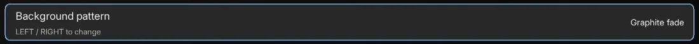
Background pattern
Press Left or Right to change the background, for example Plain charcoal, Wave, Halo or Graphite fade.
Next beta Square uploads a custom pixel background from your phone.
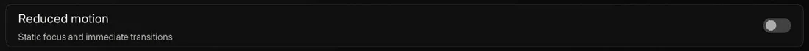
Reduced motion
Keeps focus changes static and makes transitions immediate.
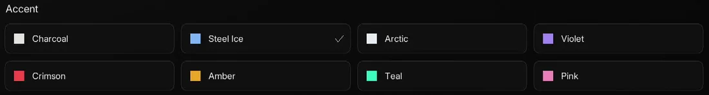
Accent
Sets the highlight color: Charcoal, Steel Ice, Arctic, Violet, Crimson, Amber, Teal or Pink.
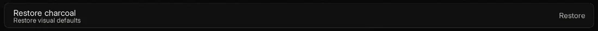
Restore charcoal
Restores the default look. Triangle does the same from anywhere on this page.
Sound
Quiet ambience and gentle feedback. Changes save automatically, and music stays beneath the interface sounds.
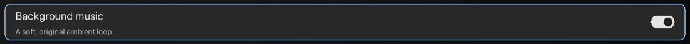
Background music
A soft, original ambient loop.
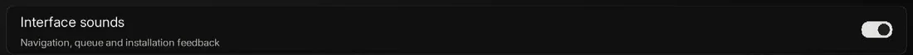
Interface sounds
Feedback for navigation, the queue and installation.
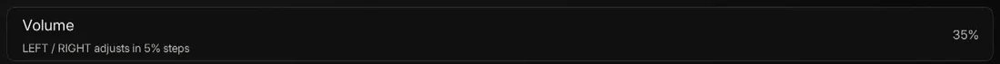
Volume
Left and Right adjust it in 5% steps.
Storage
Downloads and extraction stay on the staging drive until installation succeeds.
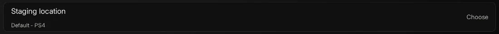
Staging location
Where SSPI keeps downloads until they're installed: the PS4's internal storage or a USB drive. Use an exFAT USB drive for large packages and keep it connected until installation finishes.
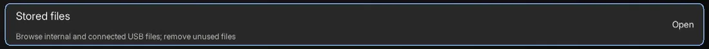
Stored files
Browse the files SSPI keeps on internal storage and connected USB drives. Triangle refreshes the list and Square selects a file for deletion.
Confirmed installs remove their staging package and transfer files. Failed jobs keep theirs so you can retry without downloading again.
Phone page
Open it by scanning the QR code in Settings → Connections. The PS4 serves this page while SSPI is open, and everything you save is stored on the console.
Services
Each service has Enable for downloads, an API key field and a Get your API key link that opens the service's own key page.
Preferred download service chooses which enabled service SSPI tries first. Save and validate sends the keys to the PS4, which checks each enabled account and reports back.
A blank key field keeps the key that's already saved on the PS4.
Sources
Paste the URL of a .gssource file and tap Install source on PS4. The PS4 downloads it, checks it and installs it.
Installed on your PS4 lists your sources with their versions and an Enabled switch.
The URL must point to the file itself, not to a web page about it.
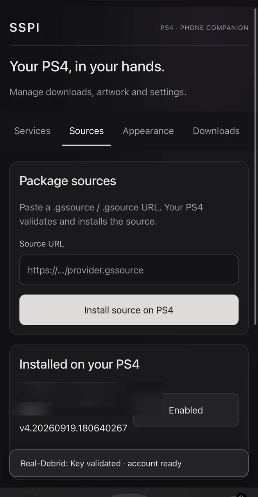
Appearance
Choose the accent color and background from the phone. Tap Save appearance to apply them on the PS4, or Restore original charcoal to go back to the default.
Next beta Upload your own picture as the background. Your phone crops it and converts it to 320 × 180 pixels; the original stays on your phone. You can add a pattern over it and set the picture opacity and accent strength.
Choose an installed game to change its SSPI case artwork and its PS4 home-screen icon. Pick a JPG, PNG or WebP image and set how it fits, plus an optional outline with its color and thickness. Effects are applied on your phone before upload.
Save cover applies it and Restore original undoes it. SSPI keeps a backup of the original 512 × 512 icon. Restart the PS4 after saving to refresh the home screen.
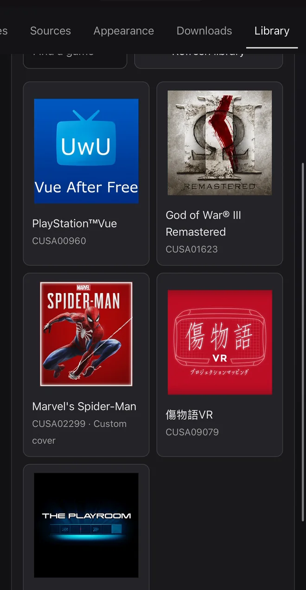
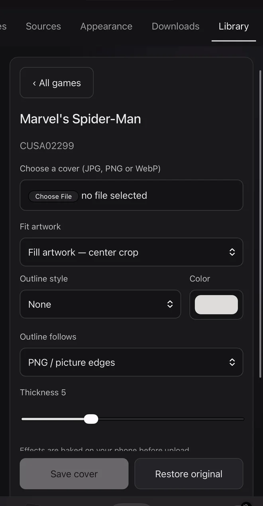
Keep the pairing link on your own network. The page uses plain HTTP and an access token. Don't forward its port to the internet, and never share the QR code, the full pairing URL or your API keys.
Package sources
A package source tells SSPI where to search, which packages belong to each title and where they can be downloaded. SSPI doesn't include any sources of its own.
Where sources come from
The community makes and shares sources. You add them in Settings → Connections → Manage sources, or from the phone page.
Community sources
Choose Browse community sources to see shared sources with their names, tags and descriptions. Pick one and choose Install.
A source link
Choose Add a source link and send a .gssource URL from your phone, or use the phone page's Sources tab.
USB
Choose Install from USB and pick a .gssource file on a connected drive.
SSPI shows each stage while it adds a source.
What is a .gssource?
A .gssource file is a ZIP archive that describes a source. It isn't a game, a PKG or a service account, and it contains no programs.
example.gssourceZIP, up to 4 MiB
├─ source.jsonthe manifest
├─ recipe or catalog files read by the engine
└─ signature.ed25519 optional
Manifest
source.json gives the source's ID, name, version and engine. It can also list every other file with its SHA-256 hash, and an update address for newer versions.
Engine
How SSPI reads the source: a recipe that describes requests and how to map the results, a remote API that asks a configured results service, or a static catalog.
Capabilities
What the source can do: search titles, provide a catalog and resolve packages for a title.
How SSPI checks a source
Data only
SSPI reads declarations from a source. It never loads or runs code from one.
Size limits
Up to 4 MiB compressed and 32 MiB expanded, with at most 64 files of 4 MiB each.
File hashes
Every listed file must match its SHA-256 hash and size, and a source with a file list can't contain unlisted files.
Known engines only
An unknown engine or capability is rejected, with a message that names the problem.
Passing these checks means the file is well formed. It doesn't prove that a source is trustworthy, or that every title and host it lists is available. Only install sources you trust.
From search to installation
Every download passes through the same six stages. When something fails, the stage tells you where to look.
SearchEnabled sources return titles for your query, and SSPI combines them.
ResolveOpening a title lists its packages: type, version, region, host and any size or firmware details.
UnlockYour enabled service turns the host link into a download link.
TransferSSPI or the background worker downloads the file, resumes after interruptions and keeps progress.
PrepareArchives are extracted, and the package's structure and size are checked.
InstallThe PS4 installer takes over, and SSPI follows it until the content is confirmed.
Managing sources
Turn on, turn off or remove
In Package sources, X toggles the selected source and Square removes it. SSPI remembers your choice.
Updates and new content
Installing a newer version of a source can fix results without an app update. Sources that support refreshing fetch new content while cached results stay available.
Help
Start with the error message: open the download's drawer with R2, choose Errors and note the exact wording.
SSPI doesn't start
Check that the SSPI package installed completely and that your homebrew environment is running. If you report it, include the PS4 model, firmware, GoldHEN version and any system error. Firmware coverage is still being tested.
The background worker isn't ready
In Settings → General, choose Retry on Background worker. After installing an update, fully restart the PS4, enable GoldHEN again and reopen SSPI. Until the worker is ready, use In-app mode and keep SSPI open.
The phone page won't open
Keep SSPI open, rescan the current QR code and make sure the phone and PS4 can reach each other. A guest network, network isolation or a phone VPN can block the page.
My key isn't validated
Copy the whole token again from your service's key page, paste it, tick Enable for downloads and tap Save and validate. A validated key doesn't guarantee that every host is supported or that your plan allows every file.
A source won't install, or search finds nothing
Check that the source is enabled and that its URL points to the .gssource file itself. For missing results, try the exact CUSA ID and clear any region filter. A source can be temporarily unavailable or leave out some titles.
A title shows no supported mirrors
SSPI only lists hosts that your enabled services support. Retry the check, choose another region, or enable another service in Settings → Connections.
The PS4 installation fails or stays on Installing
Note the SSPI error and the full error code in the PS4's notifications. Check that the title ID and base version match the update or DLC. SSPI keeps the files while it can't confirm the result, so don't delete them yet.
A multipart archive won't extract
Check that every part finished and belongs to the same set, and that there's room for the archive and the extracted package. A damaged or missing part needs a complete set or another mirror.
Downloads are slower than expected
Compare the same file on the same service. Remember that 100 Mbps is about 12.5 MB/s. Waiting for a service to prepare a file is shown separately from the transfer to your PS4.
Report a problem
Include the footer build ID, your PS4 model and firmware, the package type, the stage and the complete error message. Relevant lines from /data/SSPI/logs/combined.log help most.
Remove private details first: API keys, tokens, pairing links, QR codes and signed download links.
SSPI is free software. See the license and third-party notices. The Inter typeface is used under the SIL Open Font License; its full text is in the third-party notices.